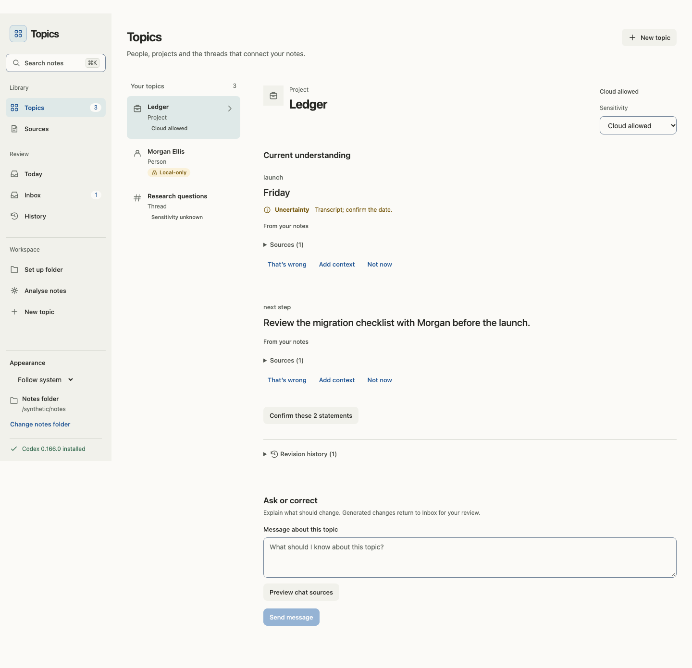

Reading and appearance
Choose an appearance
Open Appearance in the sidebar. Follow system switches whenever the device changes appearance. Choose Light or Dark to keep that palette across launches. You can set this before connecting a notes folder.
Review a topic
Open Topics and select a topic. Under Current understanding, each statement shows its value, uncertainty, review status and sources. Expand Sources to read the passage. Choose That’s wrong to preview a correction, or Add context to record your own words. Review the exact changes before approval. Revision history keeps earlier versions available.

Topic Detail with synthetic meeting notes.
How themes work
A local preference selects a named palette. The window applies that palette and its light or dark base to the document root. The reader, graph, BoardUI menus and native fields inherit the same colour roles. Adding a palette requires a registry entry and CSS tokens.